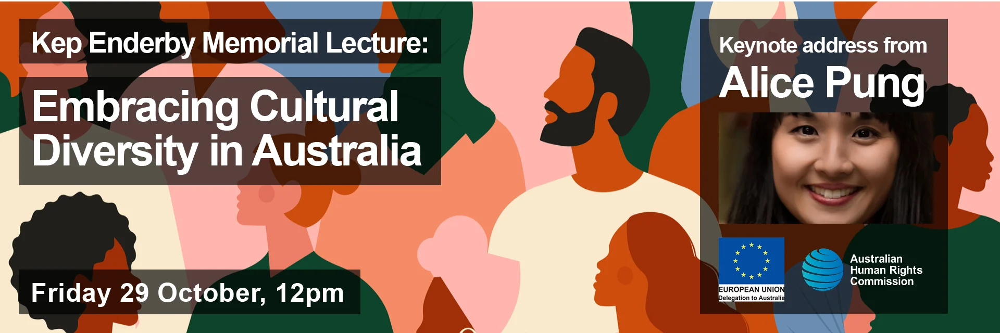

We invite you to the Annual Kep Enderby Memorial Lecture, delivered by writer Alice Pung on the theme, Embracing Cultural Diversity in Australia.
Register here for your free ticket
The inclusion of more voices in Australian discussions around race relations has increased our understanding while challenging outdated assumptions. Notions of colour blindness and assimilationism are gradually giving way to a more open multiculturalism that embraces diversity and truth-telling about the experiences of First Nations peoples. But there is resistance. For many Australians the complexities of identity and belonging remain and embracing a rich cultural heritage within contemporary Australia is not always easy or even possible.
The Kep Enderby Memorial Lecture is an annual public event held by the Australian Human Rights Commission to honour the memory of the Hon. Kep Enderby QC (1926-2015), who as Attorney-General introduced the Racial Discrimination Bill to parliament in 1975. Each year, the Lecture advances public understanding and debate about the Racial Discrimination Act 1975, racism and race relations.
Please register here for your free ticket. The lecture, which is sponsored by the EU Delegation to Australia, will this year be delivered via Zoom by Alice Pung, and will be followed by a panel discussion to reflect on her theme:
Embracing cultural diversity in Australia
Alice Pung is an award-winning author, journalist, lawyer and educator. Her novels explore themes of race and cultural identity, and have been set as texts in schools and universities throughout Australia and overseas. Alice is a frequent contributor to the Monthly, Good Weekend and Age, and was awarded the Sydney Morning Herald’s Young Novelist of the Year in 2015. Her work as a lawyer reflects a strong interest in human rights, and Alice has spoken on the ABC’s Big Ideas program against bigotry and proposed changes to the Racial Discrimination Act.
Several young Australians from diverse backgrounds will join Alice for the panel discussion following her lecture. They will include:
Kupakwashe Matangira is an activist, social entrepreneur, Global Voices policy fellow and youth rights practitioner for Save The Children. Driven by her passion for human rights and social justice, Kupa believes in the power of young people to create change and be a positive voice in Australian and world affairs. Kupa’s study of politics, philosophy and economics supports her efforts to address pressing social issues and advance human rights.
Zaahir Edries is a South African-born, Australian human rights lawyer, community advocate, writer and media commentator. He has spoken widely on issues around diversity, inclusion, migrant settlement, and the Muslim experience in Australia. He is the General Counsel of GetUp, an Executive Consultant for the Online Progressive Engagement Network, and was formerly the President and a founding member of the Muslim Legal Network NSW. Zaahir has a particular interest in the use of legislative instruments to curtail civil liberties and the disproportionate impact on marginalised communities.